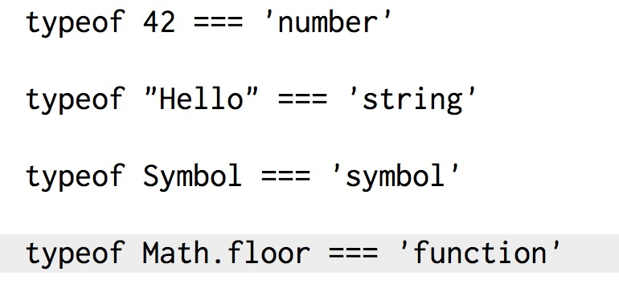
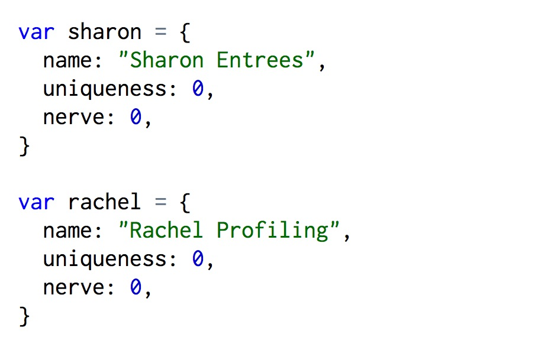
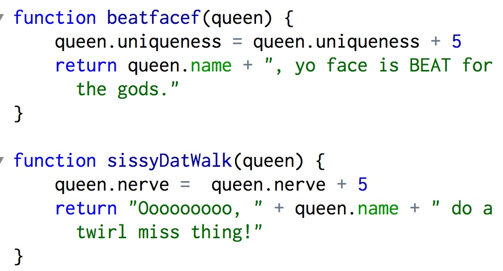

Golbs' Wernda
Javascript vs Ruby
12.14.14
Hello again, friends! This last week we've changed gears and begun learning Javascript. What's Javascript (or JS for brevity)? The majority of what we do on the internet requires the JS language to run, and it's the lifeblood of billions of data transactions every day. The majority of the world's web browsers use JS to communicate between users.
So if JS is so omnipresent why do we even use Ruby? Well, Ruby is pretty good at some things that JS isn't. Or rather, JS has a more laid back approach to things like objects.
If you remember, we like to setup objects in Ruby with the 'class' identifier. Among the benefits of that is the ability to keep what's inside the class structure free of interference from other code. We know most of our objects are in Ruby because we use a specific class to create them; like a class called "car" or "sandwich".
JS doesn't have that. Despite that shortcoming, JS is able to identify what type (or class) a data-set is.

So ok, JS can tell us what something is, but so what? Well, because JS doesn't encapsulate objects into a class we might not always know exactly what we're looking at. JS will hang on to properties we've assigned to objects for later use elsewhere in the code.

You see above that we've defined two different drag queens as objects. We can work with the properties assigned to those drag queens in other areas of our code.

In Ruby we can do that too, but we would have probably created a class called 'Queens' so that we can create a new queen whenever we wanted, and define the properties upon creation. Otherwise we just make a new queen by hand in JS. It can be a bit tedious, but JS isn't the best at everything...it's just one of the OG gansta languages that's been around for almost 20 years. Respect.